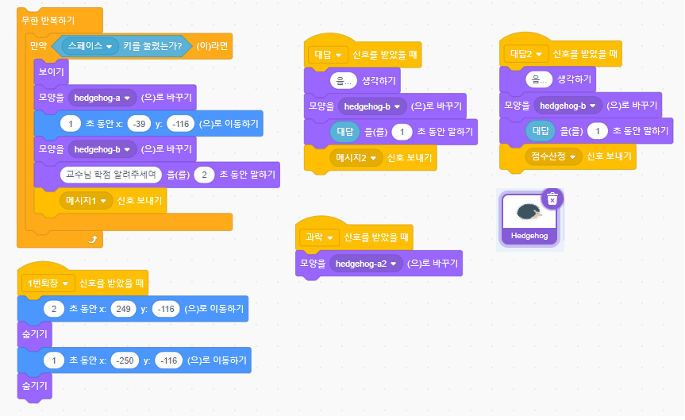

스크래치로 만드는 학점 알려주는 부엉이!
코딩도장의 스크래치반 친구들이 이번에는 아주 재미있는 상상을 현실로 만들었어요! 바로 햄스터가 간달프 교수님께 중간고사 점수를 여쭤보면, 지혜로운 부엉이가 날아와 학점을 알려주는 프로그램이랍니다. 이 프로그램을 통해 스크래치의 핵심 기능 중 하나인 '조건문'을 쉽고 재미있게 배울 수 있었습니다.
완성된 프로그램 실행 모습 (GIF)
핵심 블록 코드 살펴보기: 조건에 따라 달라지는 부엉이의 대답!
이 프로그램의 핵심은 바로 '만약 ~이라면, 아니면' 블록, 즉 조건문입니다. 입력된 점수에 따라 부엉이가 다른 말을 하도록 만드는 것이죠. 예를 들어 90점 이상이면 "A학점!", 80점 이상이면 "B학점!" 이라고 말하게 됩니다.
1. 점수 입력받고 변수에 저장하기
먼저, 햄스터가 간달프 교수님께 점수를 여쭤보고, 사용자가 점수를 입력하면 그 값을 '점수'라는 변수에 저장하는 부분입니다. '묻고 기다리기' 블록과 '대답' 블록을 활용합니다.
"내가 직접 점수를 입력하니까 진짜 햄스터가 된 것 같았어요! 변수에 숫자가 들어가는 게 신기해요." - 스크래치반 학생 C
2. 조건에 따라 학점 알려주기 (부엉이 코드)
부엉이 스프라이트의 코드입니다. '점수' 변수의 값에 따라 다른 메시지를 말하도록 여러 개의 '만약 ~이라면, 아니면' 블록을 중첩하여 사용합니다. 여기서는 간단하게 A와 B학점만 구분했지만, 더 많은 조건을 추가하여 C, D, F 학점까지 알려주도록 확장할 수 있습니다.
예를 들어, 90점 이상이면 부엉이가 "훌륭하구나! A학점이다!" 라고 말하고, 80점 이상 90점 미만이면 "잘했네! B학점일세." 라고 말하도록 설정할 수 있습니다. 그 외의 점수에는 "더 노력해야겠군!" 과 같은 메시지를 추가할 수도 있겠죠?
3. 캐릭터 간의 상호작용 (방송하기/방송받았을 때)
햄스터가 점수를 입력한 후, 부엉이가 나타나서 말을 하도록 하기 위해 '방송하기'와 '방송 받았을 때' 블록을 사용할 수 있습니다. 햄스터가 "점수입력완료" 방송을 보내면, 부엉이가 그 방송을 받고 나타나서 위에서 만든 조건문 코드를 실행하게 됩니다.
이처럼 간단한 아이디어와 스크래치의 조건문, 변수, 방송 기능을 활용하면 상상하는 이야기를 얼마든지 프로그램으로 만들 수 있답니다! 코딩도장에서는 학생들이 이러한 과정을 통해 논리적인 사고력과 문제 해결 능력을 자연스럽게 키워나가고 있습니다.